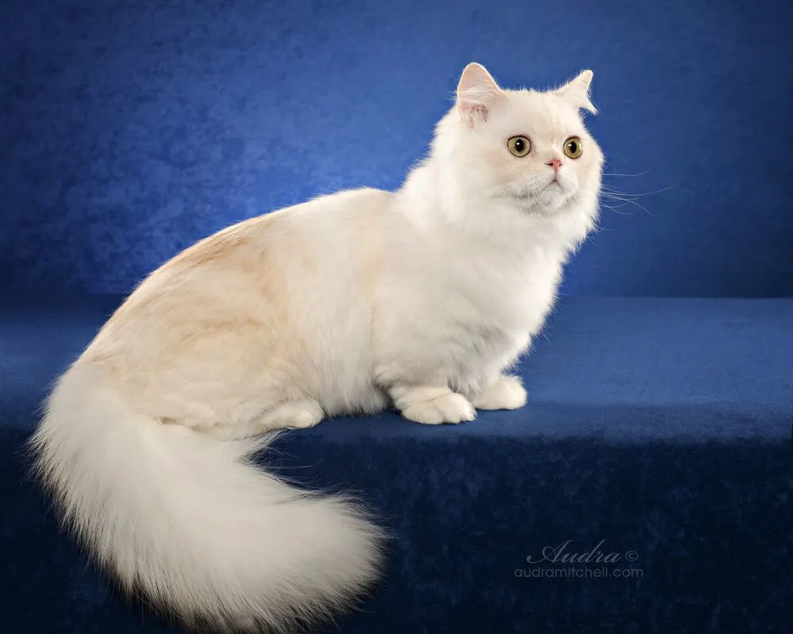
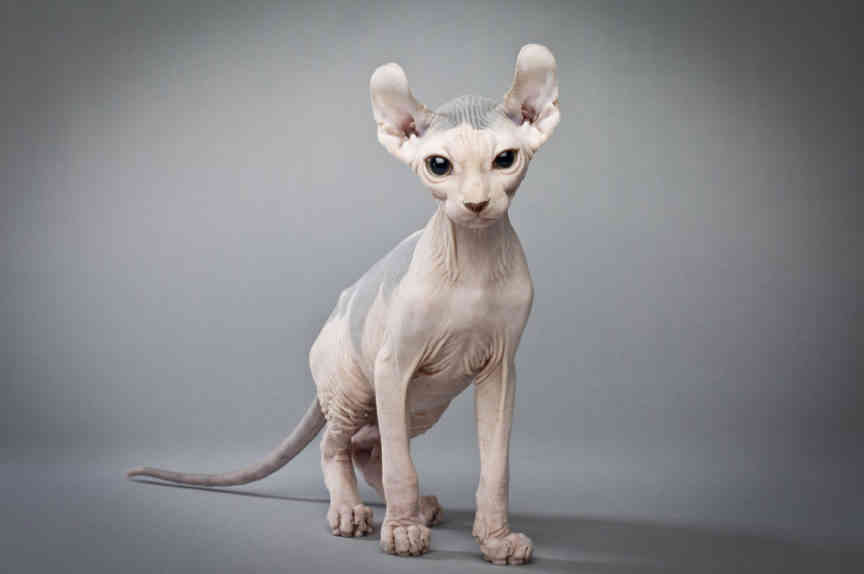
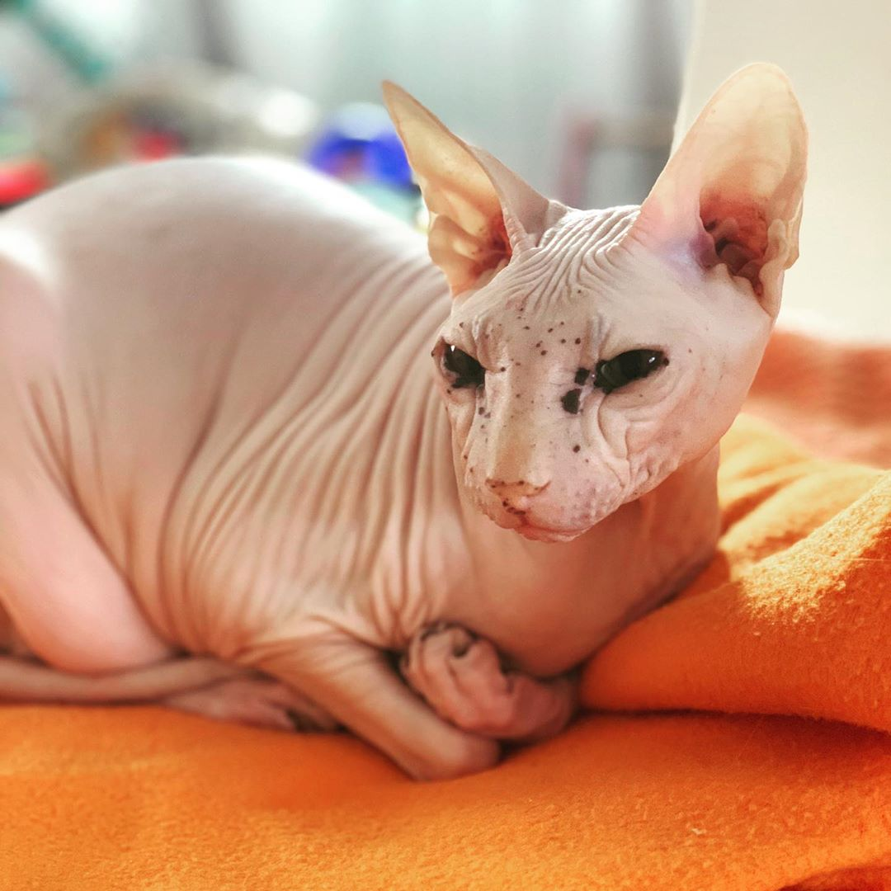
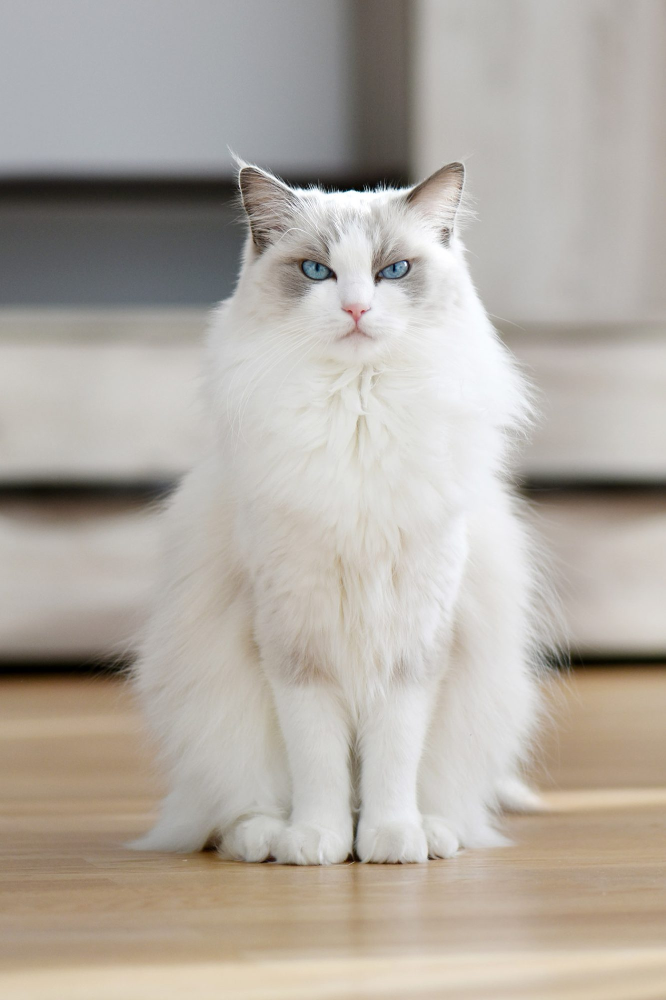

Different kinds of cat breeds

 |
The Asian Semi-Longhair is a cat breed similar to the Asian Shorthair except it has semi-long fur. The breed is also known by the name Tiffanie. It is recognized in any of the Asian Shorthair or Burmese colors and patterns. Like the Asian Shorthair, the breed was developed in Asia and is not currently recognized by any U.S. Registries. It has full recognition in the GCCF. It is related to, and in some registries distinct from, the Chantilly-Tiffany or Foreign Longhair, the North American variant. |
 |
The British Longhair is a longer-haired development from the longstanding British Shorthair breed. In the mid-20th century, British Shorthairs were interbred with imported long-haired varieties, like the Turkish Angora and what today is called the Traditional Persian, with an aim to producing more stout and round-faced stock, while retaining the short coat. As a result of this hybridization, British catteries have frequently produced (generally unwanted) semi-long-haired offspring among their litters. In more recent years, these have been intentionally bred (often outside the UK) to each other and sometimes to standard British Shorthairs, to establish a consistent, formalized British Longhair breed. |
 |
The Persian cat (Persian: گربه پارسی, romanized: Gorbe'-ye Pârsi), also known as the Persian longhair, is a long-haired breed of cat characterized by a round face and short muzzle. The first documented ancestors of Persian cats were imported into Italy from Persia around 1620.Widely recognized by cat fancy since the late 19th century, Persian cats were first adopted by the British, and later by American breeders after World War II. Some cat fancier organizations' breed standards subsume the Himalayan and Exotic Shorthair as variants of this breed, while others generally treat them as separate breeds. |
 |
lykoi also known as the werewolf cat is a natural mutation of the domestic shorthair. They usually do not have most of thier hair and thier face has hairless spots giving that werewofl appearance. |
 |
The Minskin is a breed of cat derived from intentional hybrid cross-breedings between the Munchkin and Burmese cat breeds, with the addition of Sphynx and Devon Rex.The Minskin is short-legged with a very short coat. It is described as having a small to medium-sized semi-cobby muscular body, with pug like face. |
|  |
The Minuet cat is a cross breed between the persian and the Munchkin . The end result looks like thoose black sausage dogs whoose name I forgot. Any ways my plan is to fill this list with the most cursed looking cats |
|  |
Pressuming you got this far I pressent to you the Elf cat. A new hybrid of the American Curl and Sphinx. This is a relatively new breed scince it has only been 20 years since thier creation.They are intellegent and playful and thanks to thier hair if there even is hair, are very easy to maintain. |
|  |
The next one this list is the Donskoy wich is known for being totally hairless. Hailing from Russia this hairless beast is also called the russian sphinx. Although its hairlessness make it prone to sickness due to the cold environment it lives in. |
|  |
Have you ever just wanted a cat that just goes limp when you lift it ? Well look no further to the Ragdoll. This breed hails from a series of crossbeeds from Persians. They have a doglike personality. |
 |
To end this list I would like to include the haggard looking Selkirk Rex. Known to be a cuddle cat. One of the beefier of the longhair cats it is the reason why is is better cuddle. As the age the fur gets more curly. |